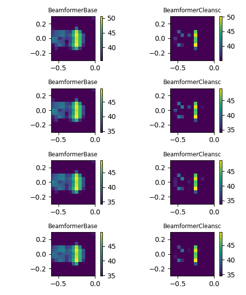
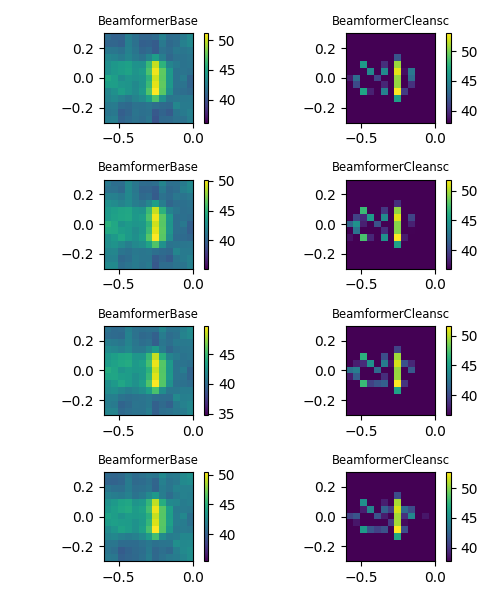

Note
Go to the end to download the full example code.
Airfoil in open jet – steering vectors.¶
Demonstrates different steering vectors in Acoular and CSM diagonal removal. Uses measured data in file example_data.h5, calibration in file example_calib.xml, microphone geometry in array_56.xml (part of Acoular).
import urllib
from pathlib import Path
import acoular as ac
The 4 kHz third-octave band is used for the example.
cfreq = 4000
num = 3
calib_file = Path('../data/example_calib.xml')
if not calib_file.exists():
calib_file = Path().cwd() / 'example_calib.xml'
if not calib_file.exists():
print('Cannot find calibration file. Downloading...')
url = 'https://github.com/acoular/acoular/tree/master/examples/data/example_calib.xml'
urllib.request.urlretrieve(url, calib_file)
print(f'Calibration file location: {calib_file}')
time_data_file = Path('../data/example_data.h5')
if not time_data_file.exists():
time_data_file = Path().cwd() / 'example_data.h5'
if not time_data_file.exists():
print('Cannot find example_data.h5 file. Downloading...')
url = 'https://github.com/acoular/acoular/tree/master/examples/data/example_data.h5'
time_data_file, _ = urllib.request.urlretrieve(url, time_data_file)
print(f'Time data file location: {time_data_file}')
First, we define the time samples using the acoular.sources.MaskedTimeSamples class
that provides masking of channels and samples. Here, we exclude the channels with index 1 and 7 and
only process the first 16000 samples of the time signals.
Alternatively, we could use the acoular.sources.TimeSamples class that provides no masking at all.
t1 = ac.MaskedTimeSamples(name=time_data_file)
t1.start = 0
t1.stop = 16000
invalid = [1, 7]
t1.invalid_channels = invalid
Calibration is usually needed and can be set directly at the acoular.sources.MaskedTimeSamples
object (preferred) or for frequency domain processing at the acoular.spectra.PowerSpectra
object (for backwards compatibility)
t1.calib = ac.Calib(from_file=calib_file)
The microphone geometry must have the same number of valid channels as the acoular.sources.MaskedTimeSamples object has.
It also must be defined, which channels are invalid.
micgeofile = Path(ac.__file__).parent / 'xml' / 'array_56.xml'
m = ac.MicGeom(from_file=micgeofile)
m.invalid_channels = invalid
Next, we define a planar rectangular grid for calculating the beamforming map (the example grid is very coarse for computational efficiency).
A 3D grid is also available via the acoular.grids.RectGrid3D class.
g = ac.RectGrid(x_min=-0.6, x_max=-0.0, y_min=-0.3, y_max=0.3, z=0.68, increment=0.05)
For frequency domain methods, acoular.spectra.PowerSpectra provides the cross spectral matrix (and its
eigenvalues and eigenvectors). Here, we use the Welch’s method with a block size of 128 samples, Hanning window and 50% overlap.
f = ac.PowerSpectra(source=t1, window='Hanning', overlap='50%', block_size=128)
To define the measurement environment, i.e. medium characteristics, the acoular.environment.Environment class is used.
(in this case, only the speed of sound is set)
env = ac.Environment(c=346.04)
The acoular.fbeamform.SteeringVector class provides the standard freefield
sound propagation model in the steering vectors.
st = ac.SteeringVector(grid=g, mics=m, env=env)
Finally, we define two different beamformers and subsequently calculate the maps for different steering vector formulations.
Diagonal removal for the CSM can be performed via the r_diag parameter.
bb = ac.BeamformerBase(freq_data=f, steer=st, r_diag=True)
bs = ac.BeamformerCleansc(freq_data=f, steer=st, r_diag=True)
Plot result maps for different beamformers in frequency domain (left: with diagonal removal, right: without diagonal removal).
from pylab import colorbar, figure, imshow, show, subplot, tight_layout, title
fi = 1 # no of figure
for r_diag in (True, False):
figure(fi, (5, 6))
fi += 1
i1 = 1 # no of subplot
for steer in ('true level', 'true location', 'classic', 'inverse'):
st.steer_type = steer
for b in (bb, bs):
subplot(4, 2, i1)
i1 += 1
b.r_diag = r_diag
map = b.synthetic(cfreq, num)
mx = ac.L_p(map.max())
imshow(ac.L_p(map.T), vmax=mx, vmin=mx - 15, origin='lower', interpolation='nearest', extent=g.extend())
colorbar()
title(b.__class__.__name__, fontsize='small')
tight_layout()
show()
- 
- 
[('example_data_cache.h5', 3)]
[('example_data_cache.h5', 4)]
[('example_data_cache.h5', 5)]
See also
Airfoil in open jet – Frequency domain beamforming methods. for an application of further frequency domain methods on the same data.
Total running time of the script: (0 minutes 2.445 seconds)